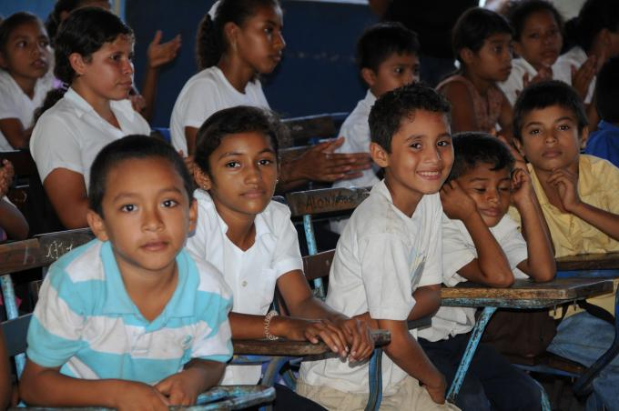
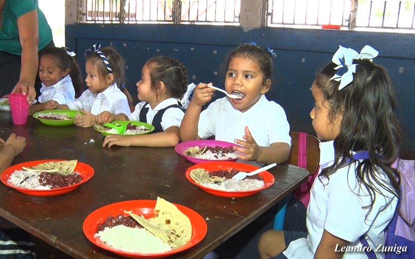
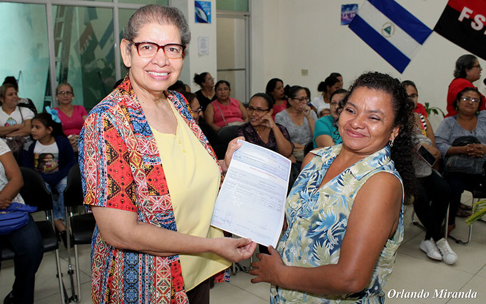
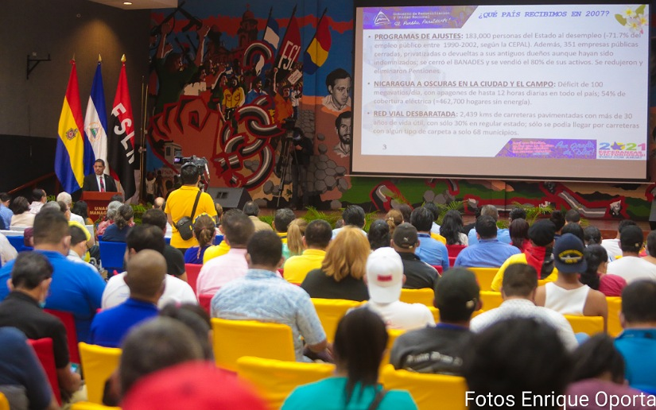
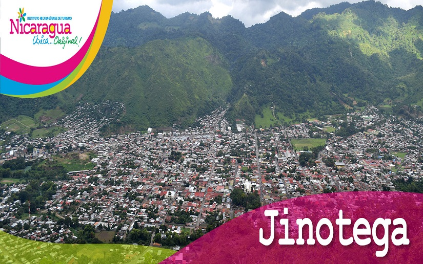
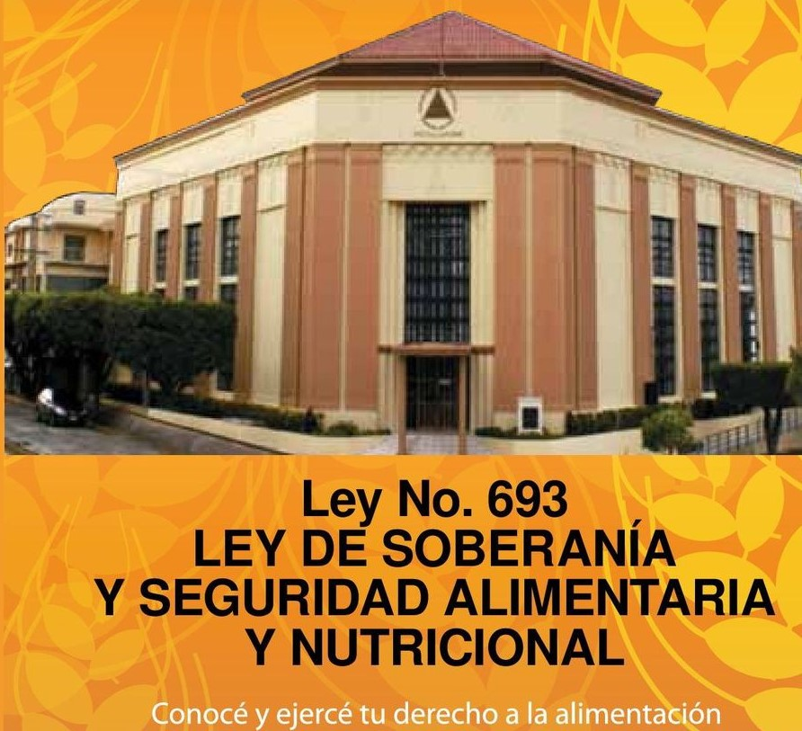
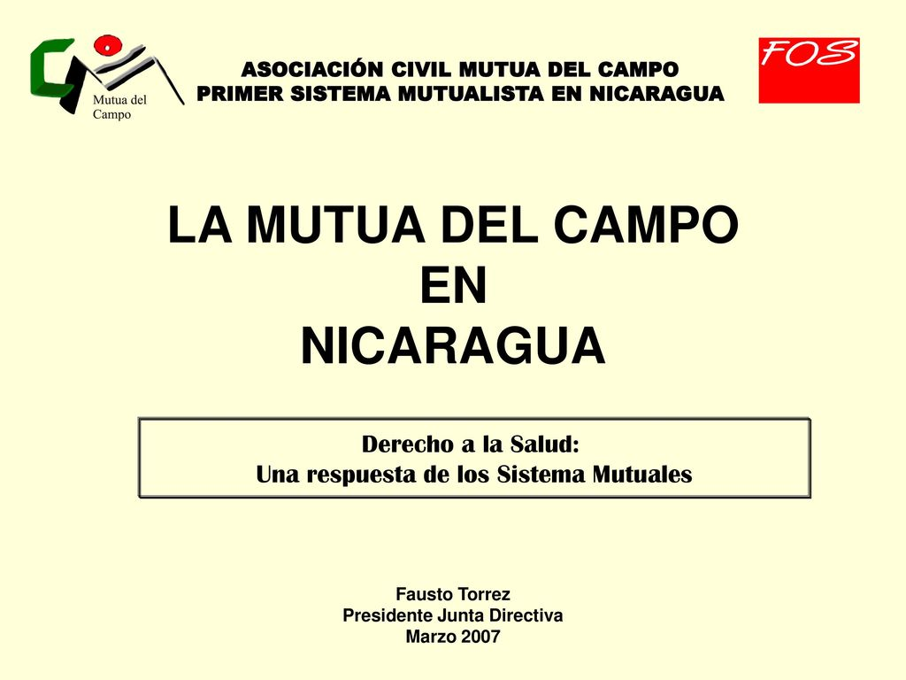
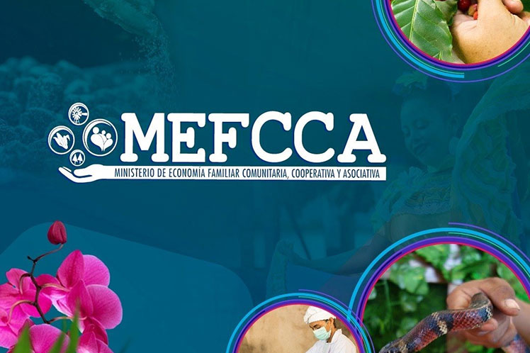
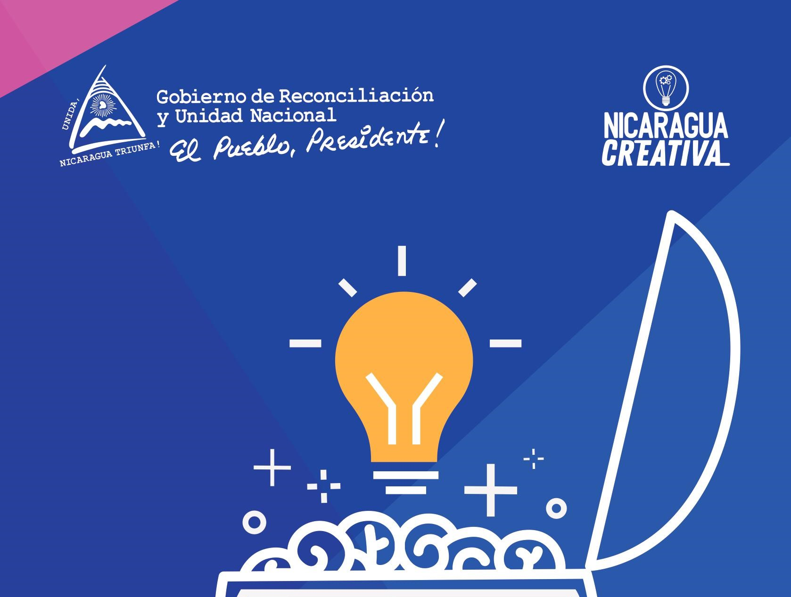

Linea De Tiempo
Año 2007 Se Promueve Economia Social Y Solidaria
Desde 2007 se han puesto en marcha numerosas políticas, programas de desarrollo nacional y reformas institucionales que tienen como objetivo promover la ESS(Economía Social Solidaria)
De Año 2007 A 2009 Cambios En La Politica Social
Cuando el Gobierno sandinista regresó al poder tuvieron lugar algunos cambios importantes en cuanto a política social. De hecho, un Decreto Presidencial emitido el día después de asumir el cargo garantiza el derecho a la educación pública gratuita, establecida en la Constitución Política de Nicaragua pero que fue ignorada por los gobiernos neoliberales que permitieron que las escuelas cobraran a los estudiantes por su educación. Asimismo, el Gobierno entrante prioriza la erradicación del analfabetismo y asegura que redujo la tasa de analfabetismo del 22 por ciento en 2007 al 4 por ciento a julio de 2009 (GRUN 2009).
Del Año 2007 En Adelante Hambre Cero
El hambre cero,la mayoría de estos estudios también dejan ver el impacto general positivo en lo referente a la producción de alimentos y su consumo, así como ciertos aspectos del empoderamiento de las mujeres. Un estudio encargado por las Naciones Unidas destacó una serie de impactos: “Durante los tres años que tiene el programa, ha aumentado la ingesta diaria de alimentos, la asistencia de los niños/as a la escuela está garantizada, los ingresos son más estables, las mujeres beneficiarias están más organizadas, ha aumentado la participación comunitaria y se han fortalecido las calidades de liderazgo”. (Cáceres et al., citando a Kester 2009).
Año 2007 Usura Cero
Si el programa Hambre Cero tiene como propósito empoderar económicamente a las mujeres rurales, el programa Usura Cero comparte el mismo fin pero haciendo énfasis en las mujeres urbanas. Gracias a este programa, las trabajadoras por cuenta propia y las microempresas obtienen acceso a microcréditos en términos mucho más favorables que aquellos asociados con las tasas de interés relativamente altas que ofrecen otras instituciones que otorgan préstamos pequeños. El programa Usura Cero nació a raíz de un Decreto Presidencial en agosto de 2007 y fue financiado con un préstamo de Venezuela
Año 2008 Ley De Promoción
La Ley de Promoción, Fomento y Desarrollo de las Micro, Pequeñas y Medianas Empresas (Ley 645) fue aprobada en 2008 y reconoce el papel fundamental que desempeña este sector en el desarrollo del país y el lugar que tiene en la prevaleciente economía mixta. El programa Usura Cero nació a raíz de un Decreto Presidencial en agosto de 2007 y fue financiado con un préstamo de Venezuela
Año 2009 Programa De Urbanizaciones
Desde el inicio del nuevo Gobierno sandinista se intentó modificar el patrón de distribución del crédito con menos énfasis en los centros urbanos (principalmente en Managua) y en el financiamiento de urbanizaciones con viviendas de clase media. Más bien hubo un esfuerzo por atender a los sectores productivos. Se prestó mayor atención a los sectores de las micro, pequeñas y medianas empresas en las zonas urbanas y rurales, así como a los grupos indígenas, y se flexibilizaron los criterios para otorgar financiamiento (GRUN 2009: 374, 377-8).
Año 2009 Ley De La Soberanía Y Seguridad Alimentaria
La Ley de Soberanía y Seguridad Alimentaria (Ley 693), aprobada en 2009, se presenta como refuerzo para importantes programas gubernamentales tales como Hambre Cero y CRISSOL (véase arriba) y como apoyo, en general, para los pequeños y medianos productores agrícolas. Esta ley tiene por propósito garantizar que los nicaragüenses puedan en todo momento acceder física y económicamente a cantidades suficientes de alimentos nutritivos que sean social y culturalmente aceptables.
Año 2010 Sistema Mutual
La Ley Marco del Sistema Mutual en Nicaragua (Ley 703), que entró en vigencia en enero de 2010, tiene como propósito institucionalizar y promover el papel de las mutuales como manera de expandir la cobertura del seguro social al facilitar el acceso de la población por medio de sistemas complementarios que funcionan en coordinación con el sistema estatal.
Año 2011 Numero De Cooperativas Duplicadas
Durante ese periodo de gobierno y mediante la promoción de las ESS(Economía Social y Solidaria), el número de cooperativas se duplicó casi el doble, alcanzando 5.006 unidades, mientras que la membresía tuvo un aumento sustancial.
Año 2012 Se Aprobo La Ley 804
En 2012 se aprobó la Ley Creadora del Consejo Nacional de Micro, Pequeñas y Medianas Empresas (Ley 804), que fue designada como el ente principal al que consultarán las autoridades del Gobierno central, regional y municipal con referencia a asuntos relacionados con el sector.